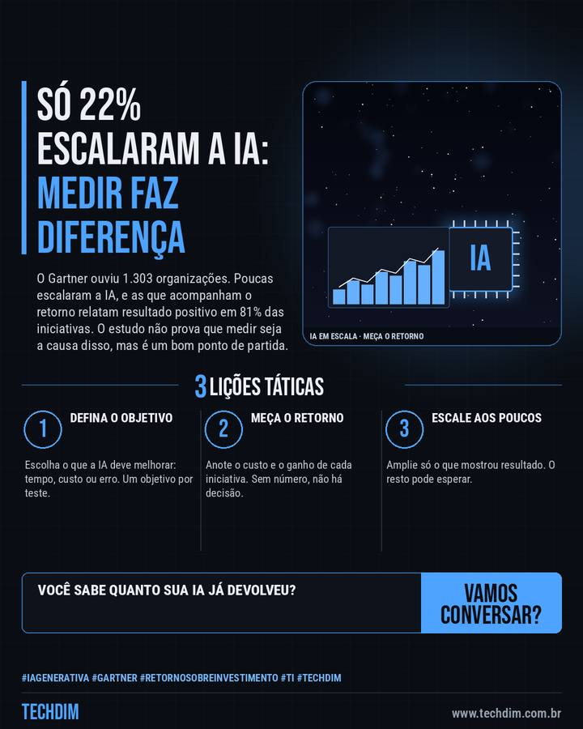

Notícia de tecnologia
Só 22% das empresas conseguiram escalar a IA; quem mede o retorno acerta mais
O Gartner ouviu 1.303 organizações. Poucas escalaram a IA, e as que acompanham o retorno relatam resultado positivo em 81% das iniciativas. O estudo não prova que medir seja a causa disso, mas é um bom ponto de partida.

Em resumo
- Pesquisa do Gartner com 1.303 organizações aponta que só 22% escalaram a IA em várias áreas, mesmo com 85% dos líderes planejando gastar mais em 2026
- Quem acompanha o retorno relatou resultado positivo em 81% das iniciativas; quem não acompanha não sabia o retorno de 29% dos seus projetos
- A amostra são empresas com faturamento de ao menos US$ 50 milhões, e o estudo não prova que medir seja a causa do bom resultado
Antes de ampliar a IA, defina quanto custa, o que ela deve melhorar e como você vai medir.
Por que importa
Dá uma régua prática para PMEs que estão testando IA: medir o retorno de cada iniciativa antes de ampliar o gasto.
O que fazer na prática
- Defina o objetivo. Escolha o que a IA deve melhorar: tempo, custo ou erro. Um objetivo por teste.
- Meça o retorno. Anote o custo e o ganho de cada iniciativa. Sem número, não há decisão.
- Escale aos poucos. Amplie só o que mostrou resultado. O resto pode esperar.
Fontes consultadas
Mais do Radar de hoje
Leia também
Este texto resume as fontes citadas na data de publicação. Confira sempre o aviso oficial do fabricante antes de agir em produção.